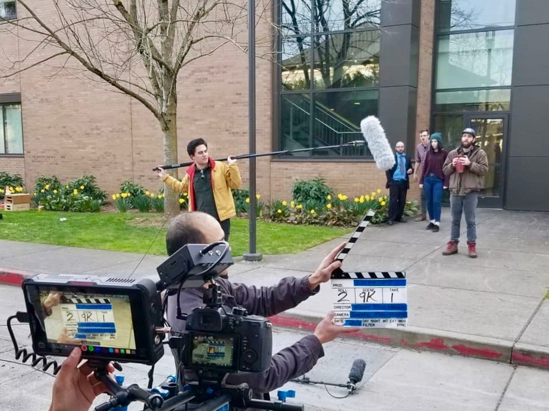
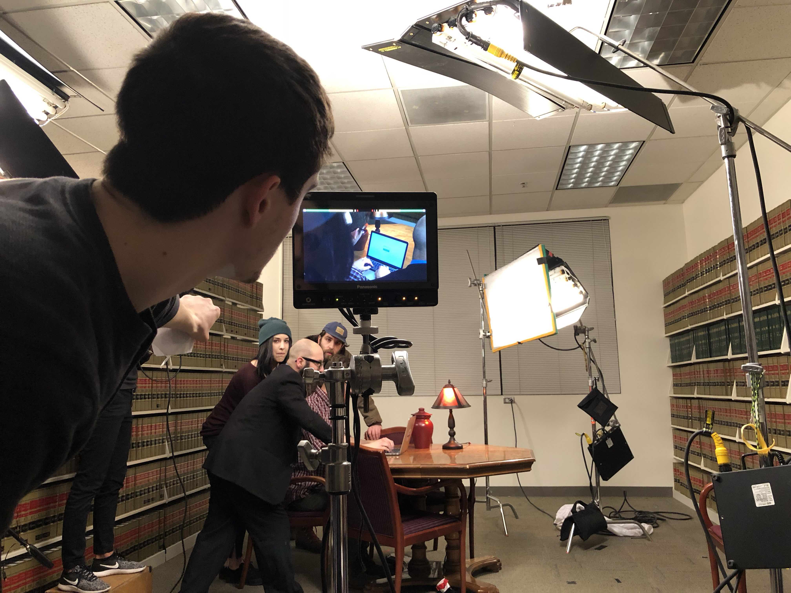
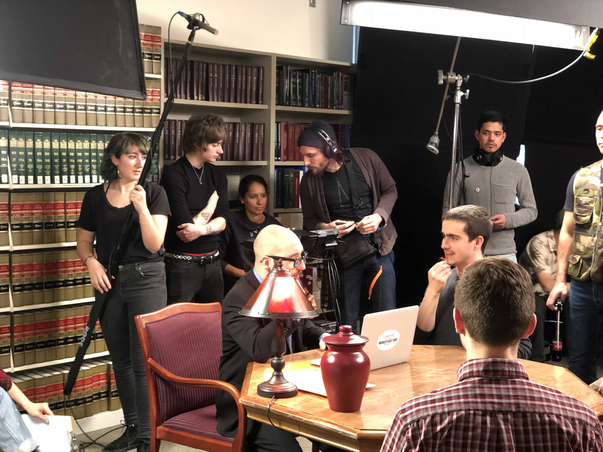
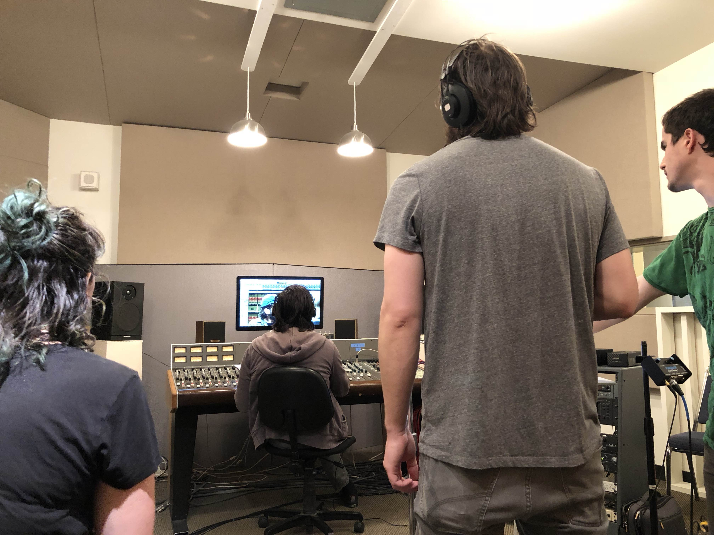
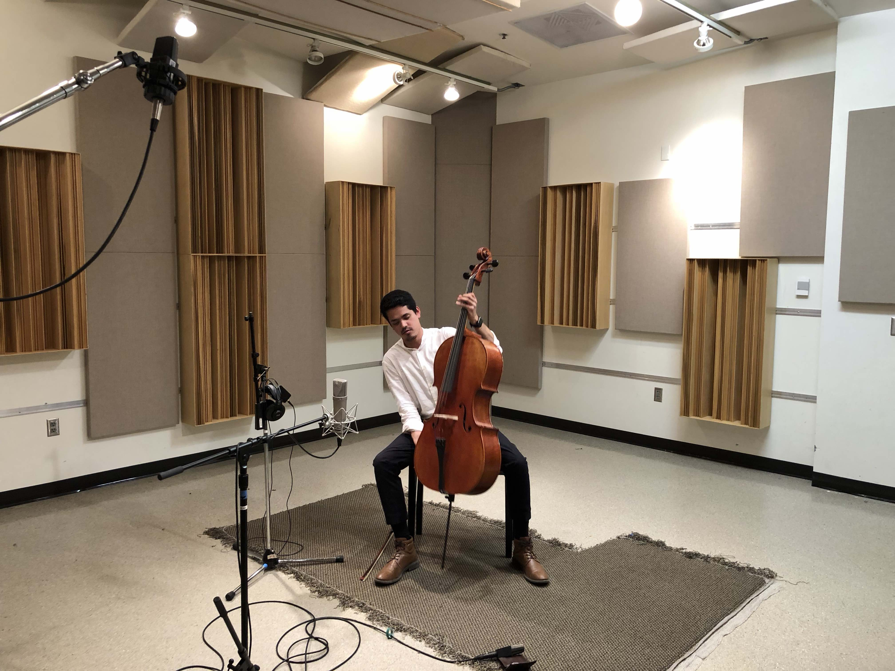
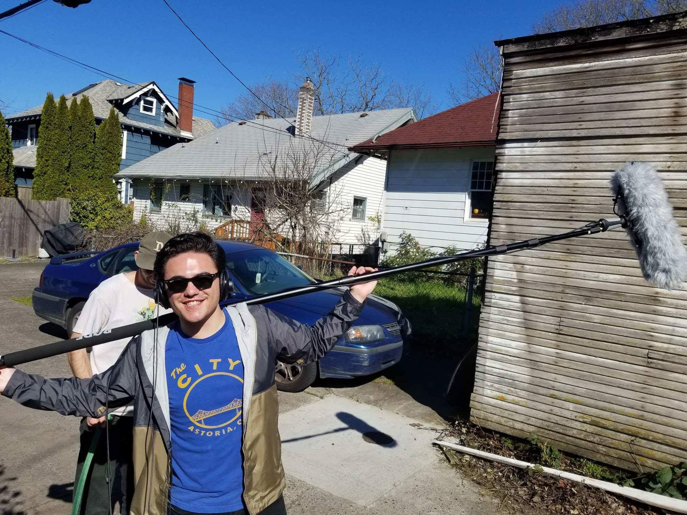
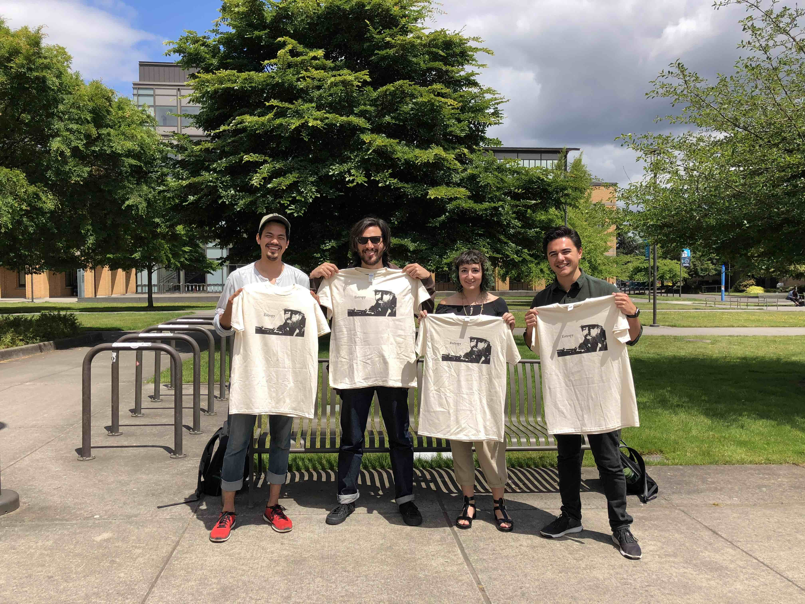

Entropy
Film
Entropy
Keanu's recording know-how also reaches into the world of sound for picture. Keanu has studied the techniques used to bring sound to the big screen. His experience in the studio includes creating immersive soundscapes, audio editing, as well as sound design, ADR, and Foley. Keanu is also well versed in recording techniques needed to record audio in the field. This includes, but is not limited to, boom mic operation, lavaliere dressing, strategic mic placements, and field mixing and recording. An example of Keanu’s work in this field can be found in the short film "Entropy", directed by Adam Stockman. In this short film, Keanu used all the above techniques, and played a role in every aspect of the sound recording, and design.





